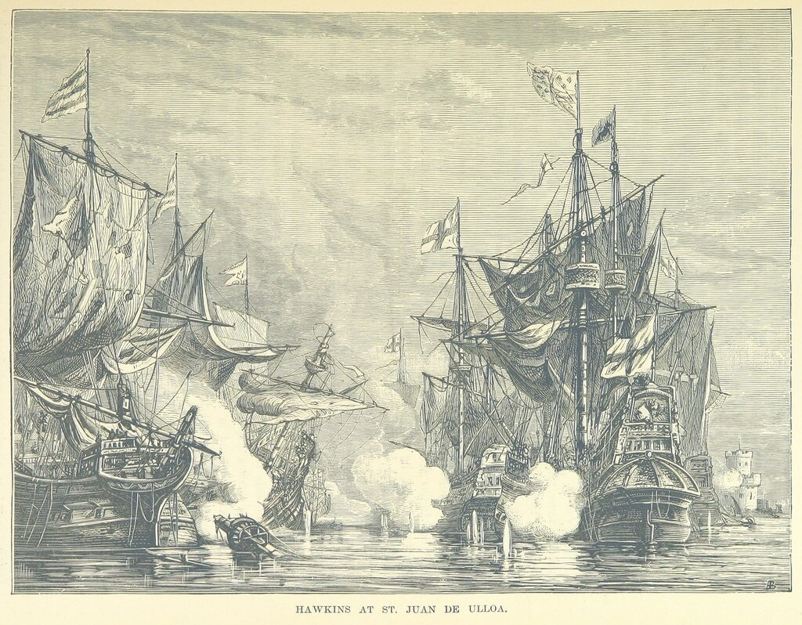
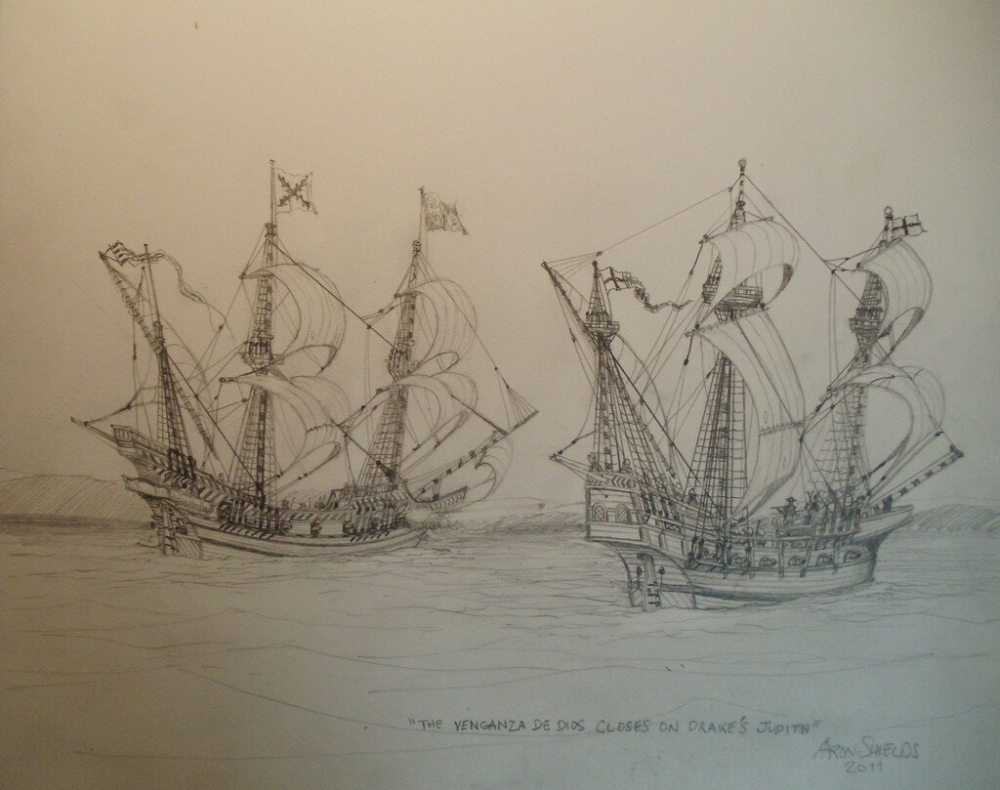
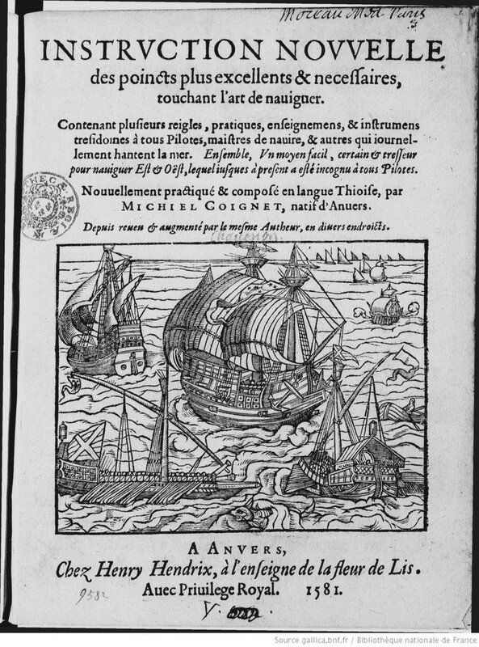

Разделение навигации на прибрежную (каботажную, малую) и океанскую (дальнюю, великую) началось не сегодня, и корни его теряются в глубоком прошлом. Многие великие мореплаватели начинали свой путь в профессии с плавания на небольших судах. Не был исключением и Дрейк: первым его судном был трехмачтовый пинас (или барк?) «Юдифь» (Judith) водоизмещением 50 тонн. Многие наши авторы так и пишут: начинал, мол, Дрейк свою морскую карьеру службой на КАБОТАЖНОМ КОРАБЛЕ.
Но мы знаем, что потом «Юдифь» пошла в Западную Африку, загрузила свои трюмы рабами и вместе с другими кораблями («Йезус оф Любек» под командованием руководителя всей экспедиции Джона Хокинса, «Миньон» и еще 4 корабля) направилась в Мексиканский залив, к порту Сан-Хуан-де-Улуа, где их встретили и изрядно потрепали корабли эскорта испанского «серебряного флота».

Сражение между англичанами и испанцами при Сан-Хуан-де-Улуа. Иллюстрация из книги The Sea: its stirring story of adventure, peril & heroism, Vol.2. (1887), Британская библиотека.
Для Дрейка это событие стало источником ненависти к испанцам (по его собственному признанию) на всю оставшуюся жизнь, а для нас – поводом к размышлению о том, что не всегда размеры и тип корабля служат основанием для отнесения его к судам каботажного или океанского плавания.

Юдифь и испанская Венганса в сражении при Сан-Хуан-де-Улуа.
Известный фламандский картограф и мастер по изготовлению навигационных инструментов, а по совместительству преподаватель математики и французского языка, Мишель Куанье (Michiel Coignet) в 1580 году опубликовал трактат Nieuwe Onderwijsinghe op de principaelste Puncten der Zeevaert (Новое руководство по основным вопросам кораблевождения), который вышел как приложение к голландскому переводу сочинения испанского картографа Педро де Медина (Pedro de Medina, 1493 - 1567) Arte de navegar. В следующем году вышел перевод «Нового руководства» на французский язык.

Мы подробнее познакомимся с этим трактатом, когда будем рассматривать важную тему определения долготы в море. А сейчас вернемся к нашему разговору. Куанье, после того, как он дает определение навигационной науке, очень близкое к рассмотренному нами выше определению Джона Ди, вводит подразделение навигационной науки на две части, которое закрепилось во всех последующих научных трактатах по навигации:
‘Cette pratique est repartie en deux, a sçauoir en la nauigation cōmune et la nauigation grande.’
Это ремесло подразделяется на два, а именно обычную навигацию и навигацию возвышенную.
Такая классификация сохранилась в навигационной науке на многие годы. К примеру, почти сто лет спустя мы читаем в «Практической навигации» Джона Селлера (кстати, почти один к одному содранной с трактата Куанье)
‘Practical Navigation . . . consists of two general Parts, First, That which may be called the Domestick or more common Navigation (I mean Coasting or Sailing along the Shore) . . . Secondly, That which may more properly bear the Name and principally deserves to be entitled the Art of Navigation, . . . that Part which guides the Ship in her Course through the Immense Ocean, to any part of the Known World. . ..’
Практическая навигация… состоит из двух основных частей – первая называется внутренней или обычной навигацией (я имею в виду каботаж или прибрежное плавание),… а вторая – та, которая имеет большее основание носить это имя и заслуживает названия Искусство навигации…, которое направляет корабль по курсу через бескрайний океан к любой точке Ойкумены…
Таким образом, мы не ошибемся, если будем утверждать, что в елизаветинскую эпоху в Англии искусство навигации включало искусство каботажного плавания («пилотаж», art of pilotage, coasting, или, как у Куанье, - ‘la nauigation commune’) и искусство океанской навигации, (la navigation grande). Причем, первое из этих искусств ставилось в подчиненное положение по отношению ко второму, несмотря на то, что каждому отделу были присущи свои специфические методы. Приведу в подтверждение этому перевод еще пары отрывков из Куанье (полагая, не без оснований, что терпение читателей не безгранично, текст оригинала в данном случае опустим).
«Обычная навигация не используют других приемов, кроме опыта, других инструментов, кроме компаса и лота. Это потому, что вся наука в этой форме кораблевождения – каботаже – заключается всего лишь в доскональном знании того, как выглядят с моря все мысы, порты, устья рек, как меняется их уровень, какова дистанция между ними, какими курсами и галсами надо идти от одного их этих объектов к другому, а также в знании, на каких румбах лежит луна при приливах и отливах, какие при этом возникают течения; в знании глубины и характера дна. Это принципиальные знания, которые можно получить только из опыта и руководств, составленных старыми опытными лоцманами.
С другой стороны, океанская навигация, помимо названных приемов, использует некоторые другие правила, требующие изощренного ума и умения применять инструменты и приборы, которые пришли в навигацию из астрономии и космографии…»
Селлер в своем руководстве выражается более определенно: «Основой океанской навигации является умение определить местоположение корабля в данный момент, т.е. его широту и долготу, для чего необходимо знание Арифметики, Геометрии, Тригонометрии и Астрономии.»
В настоящее время, мы знаем, эти два раздела навигации породили два неравнозначных института: институт лоцманов, занятых проводкой судов в некоторых наиболее сложных районах побережья и в портах, и институт штурманов, обеспечивающих кораблевождение во всех остальных районах мирового океана. Но в эпоху парусного кораблей все было не совсем так. И здесь уместно будет вернуться к Шкиперу (Shipman) из «Кентерберийских рассказов» Чосера. Мы уже приводили его характеристику, касаясь борьбы на море между купцами и пиратами, сейчас же обратим внимание на навигационное мастерство тогдашнего английского шкипера:
Он брался торговать любым товаром
И, в ремесле своем большой мастак,
Знал все течения, любой маяк
Мог различить, и отмель, и утес.
Еще ни разу с курса не отнес
Отлив его; он твердо в гавань правил
И лоцию сам для себя составил.
Корабль он вел без карт и без промера
От Готланда до мыса Финистера,
Все камни знал Бретонских берегов,
Все входы бухт испанских и портов;
Немало бурь в пути его встречало
И выцветшую бороду трепало;
От Гулля и до самой Картахены
Все знали капитана «Маделены».
Джеффри Чосер «Кентерберийские рассказы» (пер. И. Кашкина)
Об особенностях труда шкипера на судах прибрежного плавания в елизаветинской Англии поговорим в следующий раз.